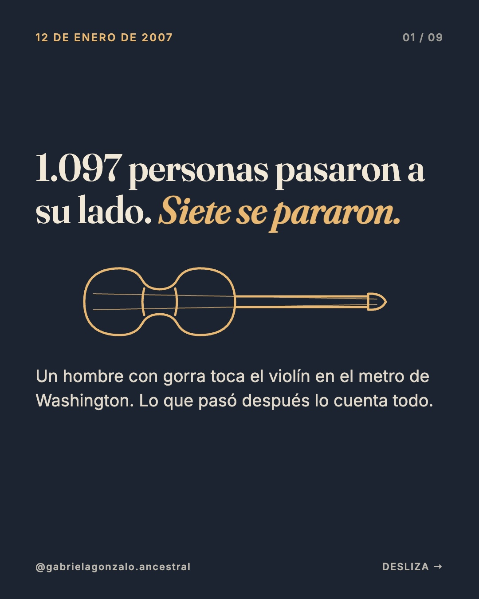
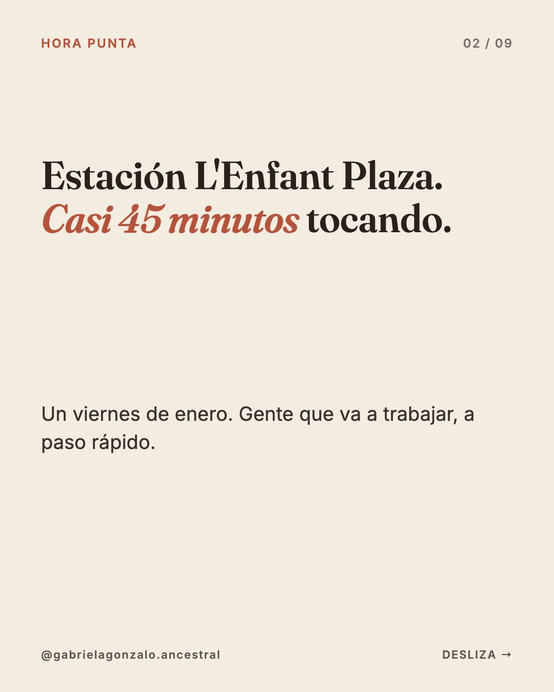
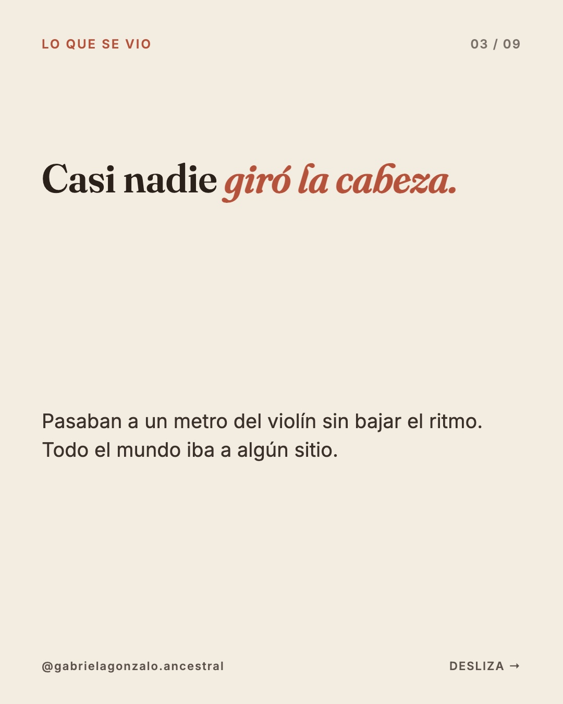
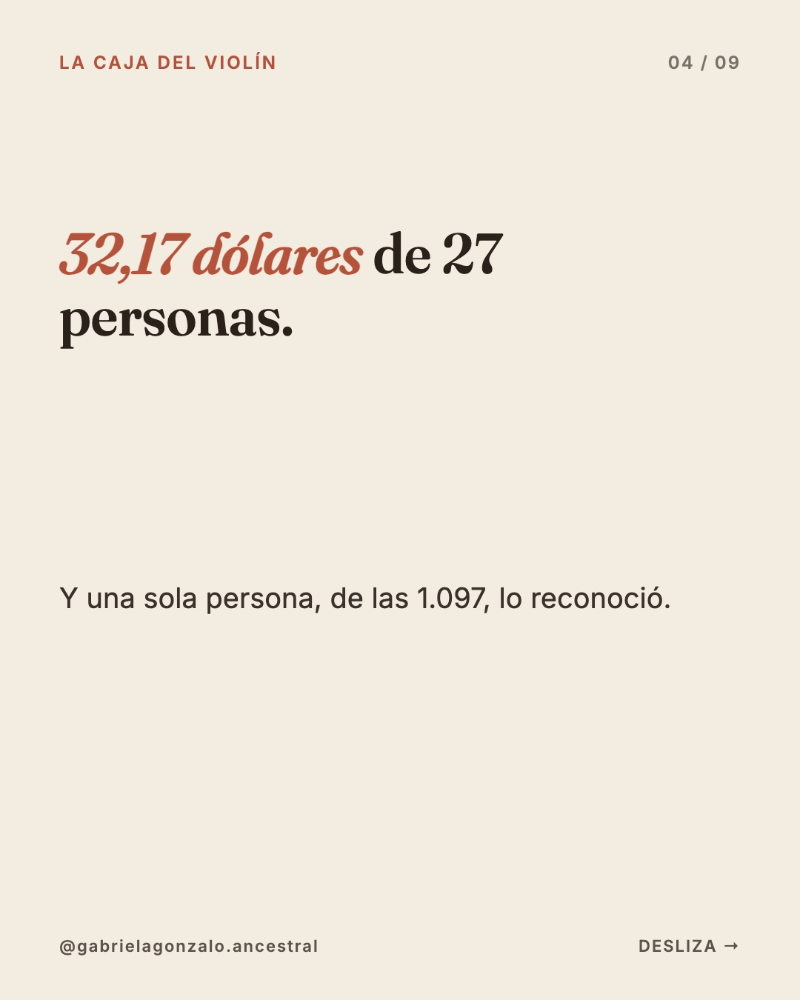
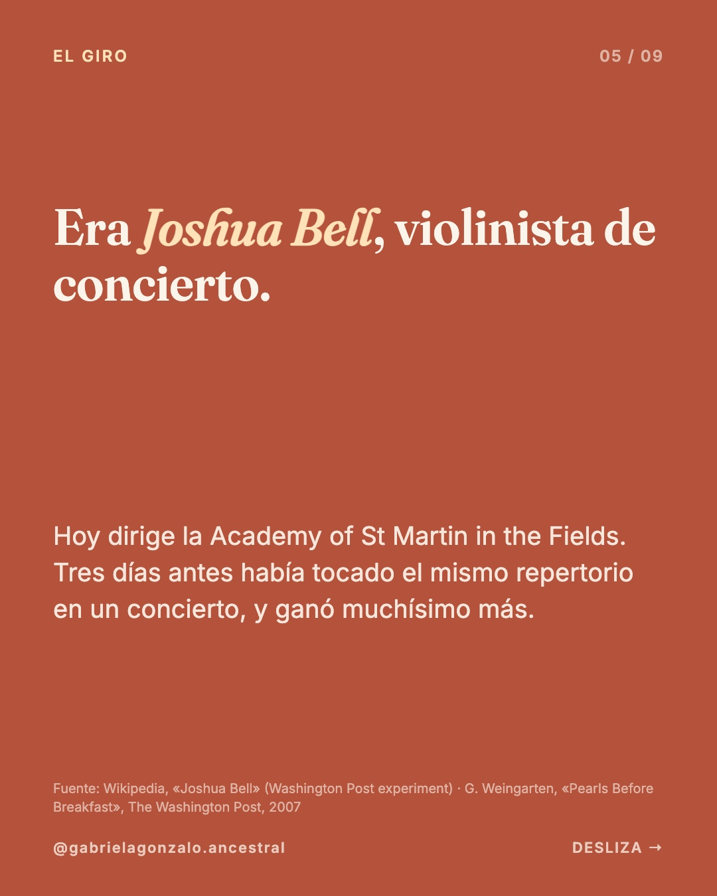
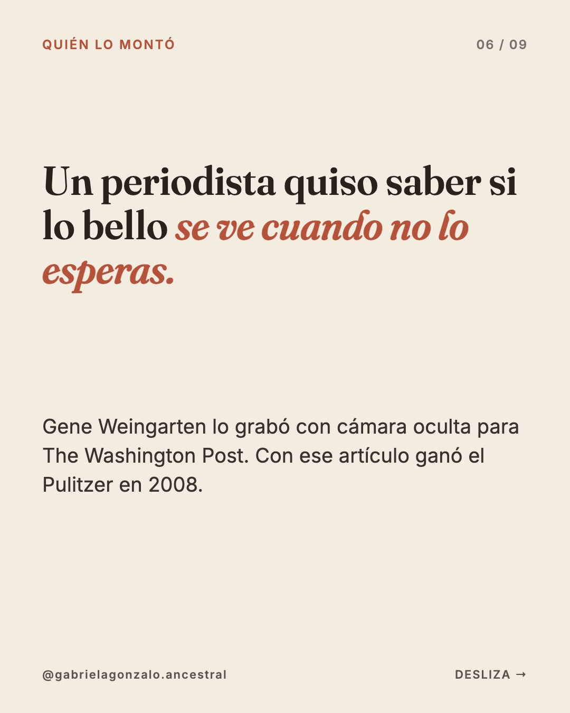
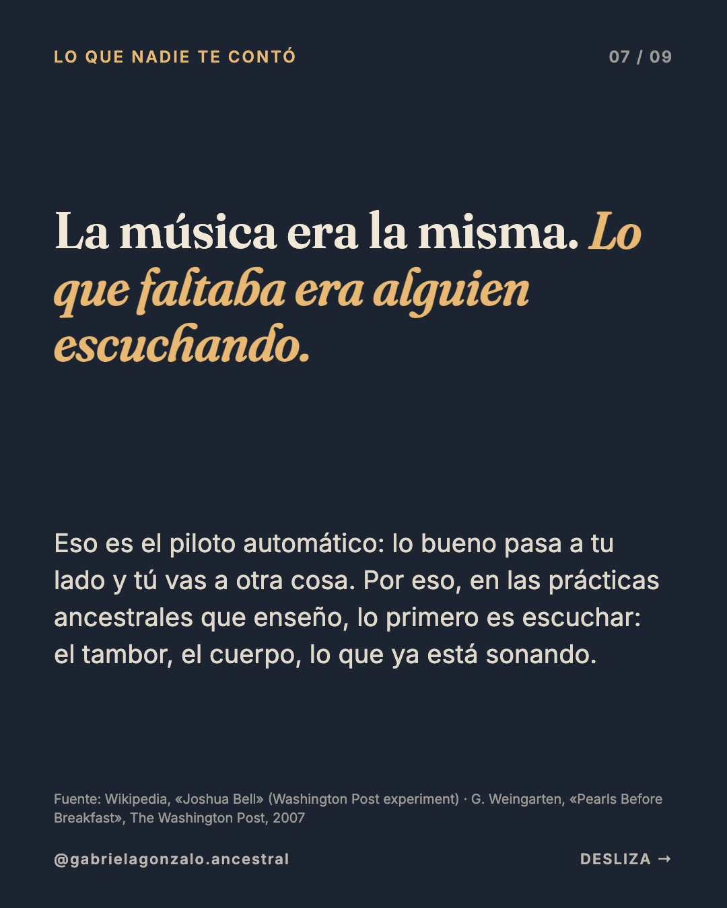
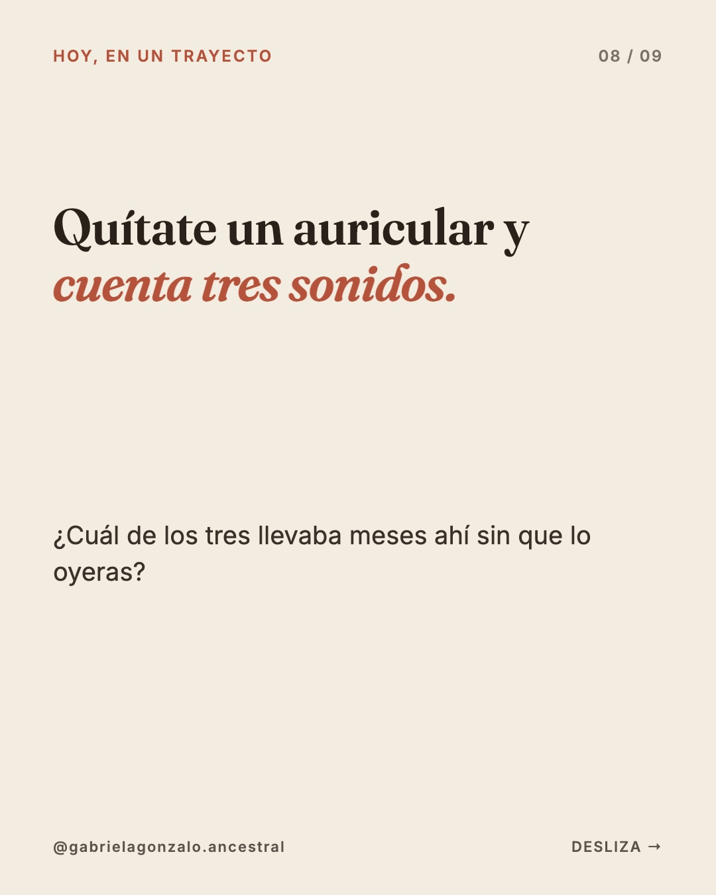
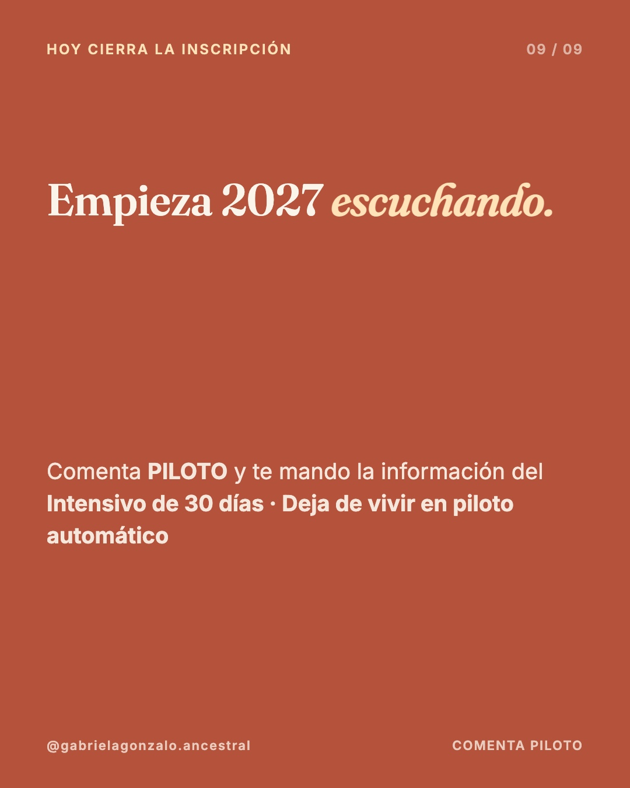

Lote de formatos · semana 30-nov → 6-dic
4 piezas sin tu cara, sacadas del radar semanal del 26-nov. Ninguna se publica sin tu sí: están en la cola como «por aprobar».
1 · Un sí o un no por pieza (botones de abajo; luego copia el resumen al chat de CONTENIDO).
2 · El CTA del 2 al 4-dic dice «Comenta PILOTO y te mando la información del Intensivo». Comprueba que el DM de PILOTO mande al intensivo desde el 2-dic; si sigue mandando a la masterclass, dímelo y cambio el texto.
3 · Del 3 al 6-dic estás fuera: si te apetece, haz 8-10 fotos con el móvil de esos días (sin nada que diga dónde estás). Son para probar el «volcado de fotos», que es tendencia fuera y nunca lo has usado.
CREATIVOS/swipe/radar-formatos/2026-11-26/informe.md.Tienes un minuto
Por qué: Tu animación del 11:11 llegó a 25.393 personas con 658 compartidos: lo más compartido de tu cuenta. Esta repite el formato sin una fecha mágica que lo empuje, para saber si es el formato o fue el 11:11. Fuera sale en 3 cuentas (Duolingo, Glossier, Nike) a ×5,2.
Esto funciona porque Cada escena es un gesto que la persona reconoce en su propio cuerpo antes de que se lo expliquen, y el giro («tu cuerpo dijo que no antes de que tú dijeras que sí») le da algo para mandar.
Caption
Te escriben «¿tienes un minuto?» y, antes de abrir el mensaje, ya apretaste la mandíbula. Los hombros suben. Respiras arriba y corto. Y contestas «claro, dime» con una voz que no es la tuya. Tu cuerpo dijo que no antes de que tú dijeras que sí. Eso también es piloto automático: sentir y no enterarte. La próxima vez, antes de contestar, suelta el aire despacio una vez. Solo eso. Y fíjate dónde se había apretado. ¿Dónde te aprieta a ti? Te leo en comentarios. 👉 Comenta PILOTO y te mando la información del Intensivo de 30 días · Deja de vivir en piloto automático. — #pilotoautomatico #mujeresejecutivas #estreslaboral #cuerpo #practicasancestrales
voz-gga 16/18 · música: Stillness · Daria Novo (la del 11:11) · métrica que decide: compartidos÷alcance a las 48 h
Diciembre
Por qué: Es tu mejor formato con diferencia: 4 piezas, mediana 10.802 de alcance contra 164,5 de tus reels (65×). El último, «Tu cuerpo sigue en la oficina» (24-nov), hizo 1.100. Hasta ahora siempre salió en trial: este sube al feed, que es lo que pide la caja «escalar». Aviso: ya hay ocho mapas densos en cola del 26-nov al 2-dic; este sería el noveno. Si prefieres no saturar, dile que no y el resto del lote no cambia.
Esto funciona porque Es una tabla para buscarse: la persona para, encuentra su fila y la guarda para hacer la última columna. Diciembre le da un motivo de hoy.
Caption
Diciembre tiene su propio piloto automático: cenas de empresa, cierres, regalos, familia y una lista de propósitos que pesa antes de empezar. Busca tu fila. La última columna es un minuto y se hace hoy. ¿Cuál es la tuya? Te leo en comentarios. Empieza 2027 sin piloto automático. 👉 Comenta PILOTO y te mando la información del Intensivo de 30 días · Deja de vivir en piloto automático. Lectura de trabajo, no diagnóstico. — #pilotoautomatico #diciembre #mujeresejecutivas #estres #findeaño
voz-gga 15/18 · música: Open Air · Tokay (la del mapa de las 5 áreas) · métrica que decide: compartidos÷alcance a las 48 h
Violinista









Por qué: Fuera es el formato con el múltiplo más alto de la semana entre los que son tendencia: 3 cuentas de 3 sectores (Mel Robbins, Gary Vee, Glossier), ×25,5, y el que más conversación saca después del tuit (5,1 comentarios por cada 100 likes). En tu cuenta tus 5 historias en láminas hicieron 2,3 veces tu normal de carrusel.
Esto funciona porque La historia avanza lámina a lámina con una cifra que intriga (1.097 personas, siete se pararon) y el giro llega en la 5: quien desliza quiere saber quién era.
Caption
El 12 de enero de 2007, un hombre con gorra tocó el violín casi 45 minutos en una estación de metro de Washington. Pasaron 1.097 personas. Se pararon siete. Era Joshua Bell, violinista de concierto. Tres días antes había tocado lo mismo en un concierto y ganó muchísimo más. En el metro reunió 32,17 dólares. La música era la misma. Lo que faltaba era alguien escuchando. Hoy, en un trayecto, quítate un auricular y cuenta tres sonidos. Después me cuentas cuál llevaba meses ahí sin que lo oyeras. Hoy cierra la inscripción. 👉 Comenta PILOTO y te mando la información del Intensivo de 30 días · Deja de vivir en piloto automático. Fuente: Gene Weingarten, «Pearls Before Breakfast», The Washington Post (2007). Con ese artículo ganó el Pulitzer en 2008. — #pilotoautomatico #mujeresejecutivas #presente #practicasancestrales #escuchar
voz-gga 16/18 · métrica que decide: compartidos÷alcance a las 48 h
Cuatro pausas
Por qué: Segunda animación sin fecha especial, con otro tema y otro color. Con 80 y 83 a la vez sabremos en una semana si la animación rinde por sí misma (hoy N=1). Sale después del cierre: CTA de seguir y guardar, sin venta.
Esto funciona porque La lista de cuatro pausas es tan cotidiana que cada escena es un «me pasa», y la práctica cabe en cualquiera de ellas: se guarda para mañana.
Caption
Dices que no tienes tiempo para parar. Y paras cuatro veces al día: el semáforo en rojo, el ascensor, el agua del café, la cola del súper. Las cuatro las llenas con el móvil. En las prácticas ancestrales, parar no es irte a un retiro: es volver al cuerpo donde estés. Mañana elige una de las cuatro y déjala vacía. Pies en el suelo, el aire fuera despacio. Nada más. Guárdalo y mándaselo a quien siempre dice que no tiene tiempo. 👉 Sígueme para más prácticas de un minuto como esta. — #pilotoautomatico #pausa #mujeresejecutivas #presente #practicasancestrales
voz-gga 16/18 · música: Gymnopédie No.1 Lofi · Giulio Cercato · métrica que decide: compartidos÷alcance a las 48 h